- Ограничения на использования линейной регрессии и смешанные регрессионные модели
Г. Мороз
1. Введение
Некоторые думают, что линейная регрессия решит все их проблемы (по крайней мере те из них, которые связаны с предсказанием какой-то числовой переменной). Это так. Но нужно быть осторожным — у регрессии есть свои ограничения на применение.
1.1 Библиотеки
library(tidyverse)
library(lme4)
library(lingtypology) # only for linguistic mapping1.2 Lexical Decision Task data
Dataset and description from Rling package by Natalia Levshina. This data set contains 100 randomly selected words from the English Lexicon Project data (Balota et al. 2007), their lengths, mean reaction times and corpus frequencies.
ldt <- read_csv("https://goo.gl/ToxfU6")
ldt1.3 LAPSyD
In this dataset we have number of consonants and vowels in 402 languages collected from LAPSyD database (http://www.lapsyd.ddl.ish-lyon.cnrs.fr/lapsyd/). There is an variable of the area based on Glottolog (http://glottolog.org/). In this part we will try to make models that predict number of vowels by number of consonants.
lapsyd <- read.csv("https://goo.gl/eD4S5n")
lapsydmap.feature(lapsyd$name,
features = lapsyd$area,
label = lapsyd$name,
label.hide = TRUE)2. Нелинейность взаимосвязи
Давайте посмотрим на простой график:
ldt %>%
ggplot(aes(Mean_RT, Freq))+
geom_point()+
theme_bw()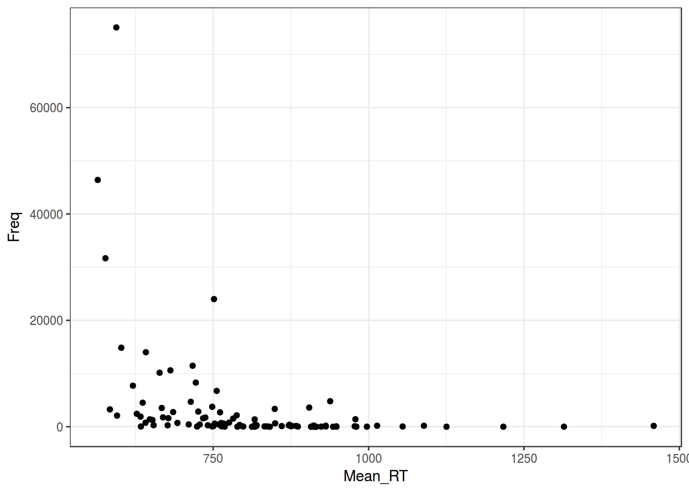
Регрессия на таких данных будет супер неиформативна:
ldt %>%
ggplot(aes(Mean_RT, Freq))+
geom_point()+
geom_smooth(method = "lm")+
theme_bw()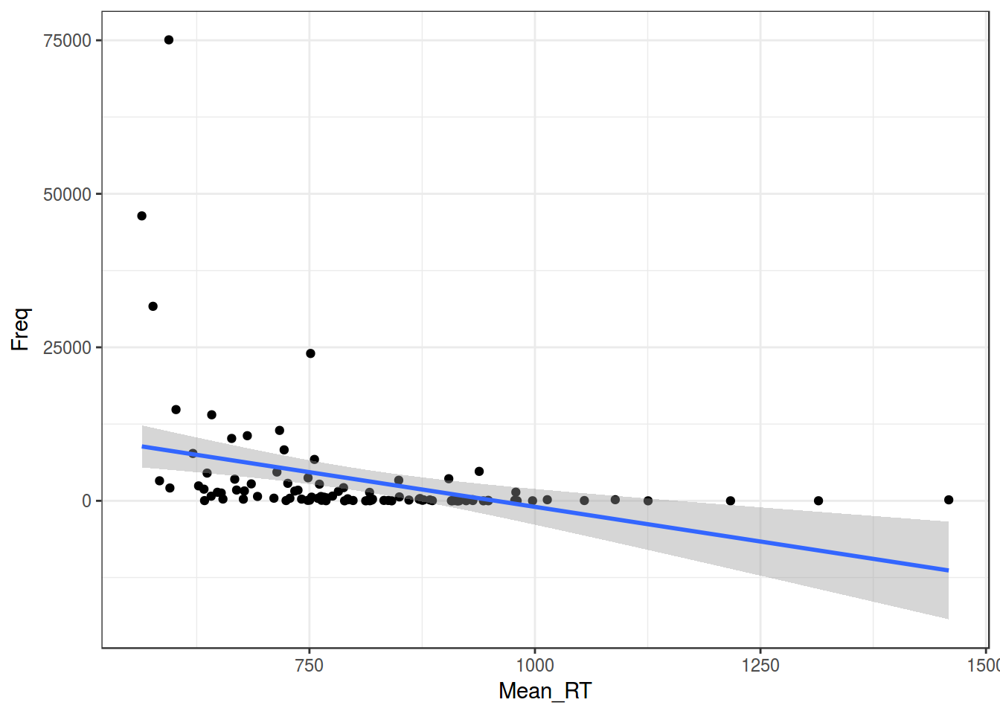
m1 <- summary(lm(Mean_RT~Freq, data = ldt))
m1##
## Call:
## lm(formula = Mean_RT ~ Freq, data = ldt)
##
## Residuals:
## Min 1Q Median 3Q Max
## -224.93 -85.42 -30.52 81.90 632.66
##
## Coefficients:
## Estimate Std. Error t value Pr(>|t|)
## (Intercept) 826.998242 15.229783 54.301 < 2e-16 ***
## Freq -0.005595 0.001486 -3.765 0.000284 ***
## ---
## Signif. codes: 0 '***' 0.001 '**' 0.01 '*' 0.05 '.' 0.1 ' ' 1
##
## Residual standard error: 143.9 on 98 degrees of freedom
## Multiple R-squared: 0.1264, Adjusted R-squared: 0.1174
## F-statistic: 14.17 on 1 and 98 DF, p-value: 0.00028432.1 Логорифмирование
ldt %>%
ggplot(aes(Mean_RT, log(Freq)))+
geom_point()+
geom_smooth(method = "lm")+
theme_bw()## Warning: Removed 5 rows containing non-finite values (stat_smooth).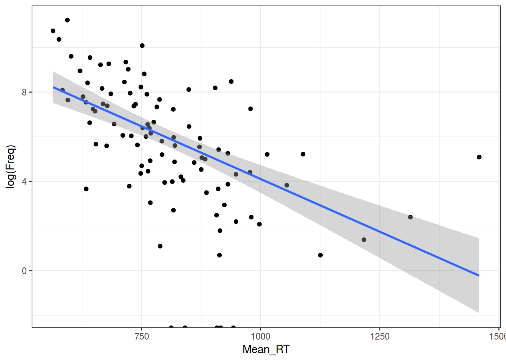
ldt %>%
ggplot(aes(Mean_RT, log(Freq+1)))+
geom_point()+
geom_smooth(method = "lm")+
theme_bw()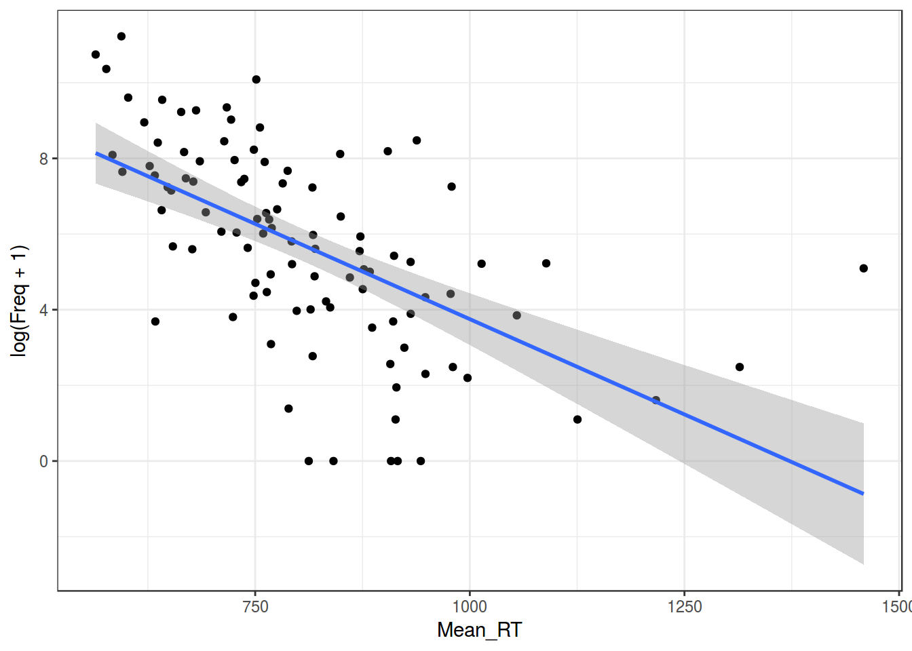
m2 <- summary(lm(Mean_RT~log(Freq+1), data = ldt))
m2##
## Call:
## lm(formula = Mean_RT ~ log(Freq + 1), data = ldt)
##
## Residuals:
## Min 1Q Median 3Q Max
## -242.36 -76.66 -17.49 48.64 630.49
##
## Coefficients:
## Estimate Std. Error t value Pr(>|t|)
## (Intercept) 1001.60 29.79 33.627 < 2e-16 ***
## log(Freq + 1) -34.03 4.76 -7.149 1.58e-10 ***
## ---
## Signif. codes: 0 '***' 0.001 '**' 0.01 '*' 0.05 '.' 0.1 ' ' 1
##
## Residual standard error: 124.8 on 98 degrees of freedom
## Multiple R-squared: 0.3428, Adjusted R-squared: 0.3361
## F-statistic: 51.11 on 1 and 98 DF, p-value: 1.576e-10m1$adj.r.squared## [1] 0.1174405m2$adj.r.squared## [1] 0.336078Отлогорифмировать можно и другую переменную.
ldt %>%
ggplot(aes(log(Mean_RT), log(Freq + 1)))+
geom_point()+
geom_smooth(method = "lm")+
theme_bw()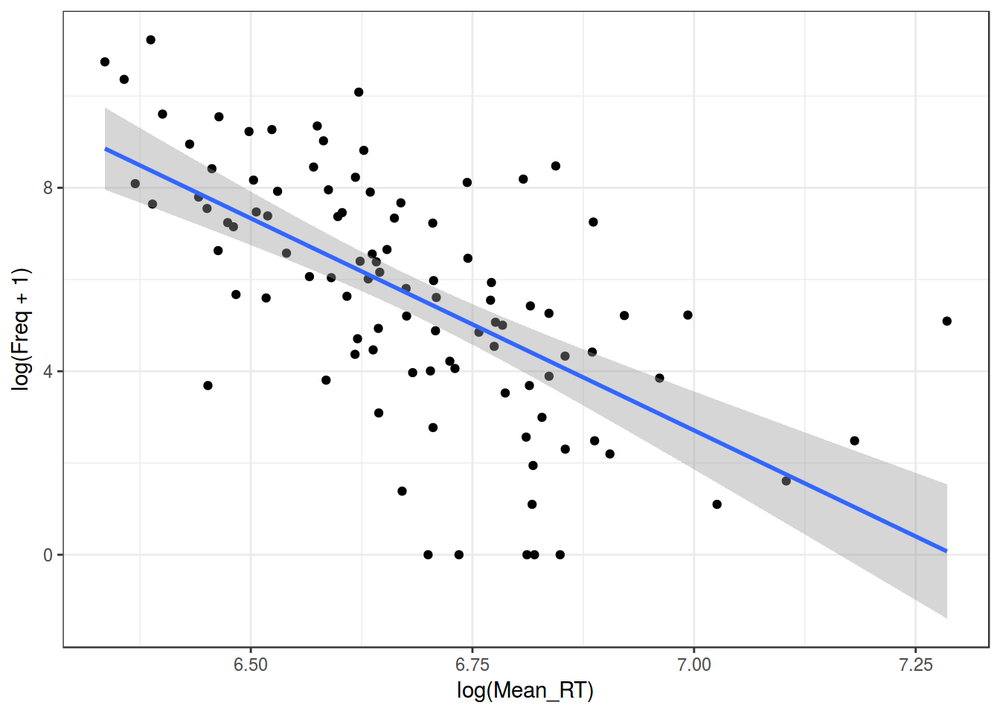
m3 <- summary(lm(log(Mean_RT)~log(Freq+1), data = ldt))
m1$adj.r.squared## [1] 0.1174405m2$adj.r.squared## [1] 0.336078m3$adj.r.squared## [1] 0.3838649Как интерпретировать полученную регрессию с двумя отлогорифмированными значениями?
В обычной линейной регресии мы узнаем отношения между \(x\) и \(y\): \[y_i = \beta_0+\beta_1\times x_i\]
Как изменится \(y_j\), если мы увеличем \(x_i + 1 = x_j\)? \[y_j = \beta_0+\beta_1\times x_j\]
\[y_j - y_i = \beta_0+\beta_1\times x_j - (\beta_0+\beta_1\times x_i) = \beta_1(x_j - x_i)\]
Т. е. \(y\) увеличится на \(\beta_1\) , если \(x\) увеличится на 1. Что же будет с логарифмированными переменными? Как изменится \(y_j\), если мы увеличем \(x_i + 1 = x_j\)?
\[\log(y_j) - \log(y_i) = \beta_1\times (\log(x_j) - \log(x_i))\]
\[\log\left(\frac{y_j}{y_i}\right) = \beta_1\times \log\left(\frac{x_j}{x_i}\right) = \log\left(\frac{x_j}{x_i}\right) ^ {\beta_1}\]
\[\frac{y_j}{y_i}= \left(\frac{x_j}{x_i}\right) ^ {\beta_1}\]
Т. е. \(y\) увеличится на \(\beta_1\) процентов, если \(x\) увеличится на 1 процент.
Логарифмирование — не единственный вид траснформации:
- трансформация Тьюки
shiny::runGitHub("agricolamz/tukey_transform")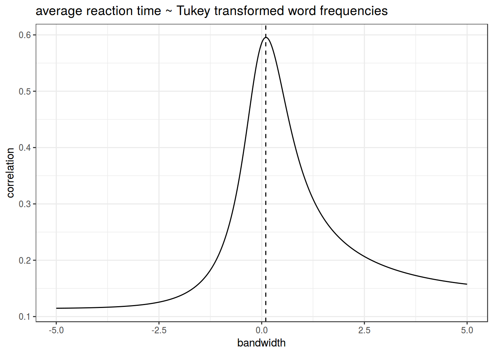
- трансформация Бокса — Кокса
- …
3. Нормальность распределение остатков
Линейная регрессия предполагает нормальность распределения остатков. Когда связь не линейна, то остатки тоже будут распределены не нормально.
qqnorm(m1$residuals)
qqline(m1$residuals)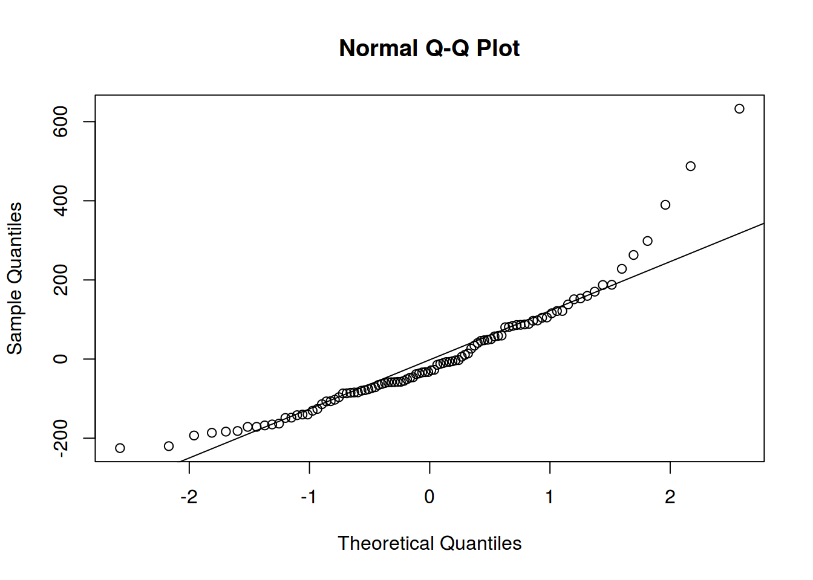
qqnorm(m2$residuals)
qqline(m2$residuals)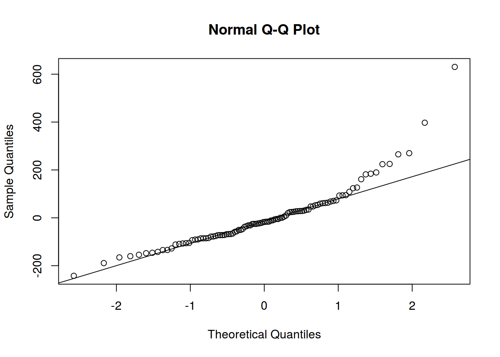
qqnorm(m3$residuals)
qqline(m3$residuals)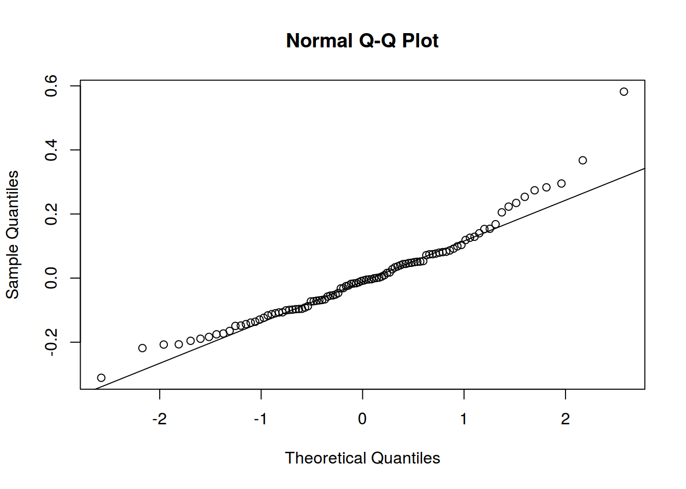
4. Гетероскидастичность
Распределение остатков непостоянно (т. е. не гомоскидастичны):
ldt %>%
ggplot(aes(Mean_RT, Freq))+
geom_point()+
theme_bw()Тоже решается преобазованием данных.
5. Мультиколлинеарность
Линейная связь между некоторыми предикторами в модели.
- корреляционная матрица
- VIF (Variance inflation factor),
car::vif()
6. Независимость наблюдений
Наблюдения должны быть независимы.
lapsyd %>%
ggplot(aes(count_consonant, count_vowel))+
geom_point()+
labs(x = "number of consonants",
y = "number of vowels",
caption = "data from LAPSyD")+
theme_bw()
Обведем наблюдения по каждому спикеру:
lapsyd %>%
ggplot(aes(count_consonant, count_vowel, color = area))+
geom_point()+
labs(x = "number of consonants",
y = "number of vowels",
caption = "data from LAPSyD")+
theme_bw()+
stat_ellipse()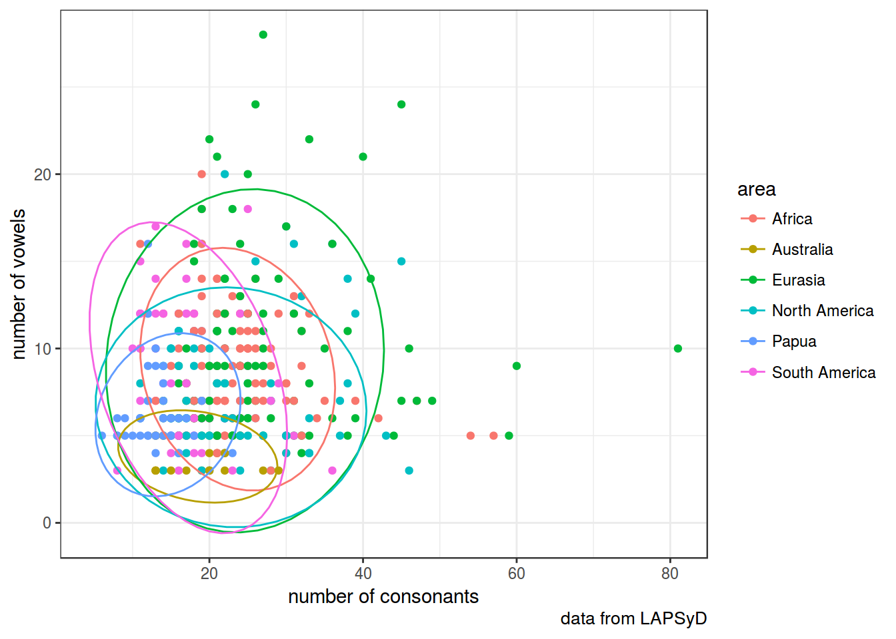
Построим простую регрессию и добавим ее на график:
fit1 <- lm(count_vowel~count_consonant, data = lapsyd)
summary(fit1)##
## Call:
## lm(formula = count_vowel ~ count_consonant, data = lapsyd)
##
## Residuals:
## Min 1Q Median 3Q Max
## -6.252 -2.992 -1.195 2.201 19.520
##
## Coefficients:
## Estimate Std. Error t value Pr(>|t|)
## (Intercept) 7.38236 0.54784 13.475 <2e-16 ***
## count_consonant 0.04065 0.02274 1.787 0.0746 .
## ---
## Signif. codes: 0 '***' 0.001 '**' 0.01 '*' 0.05 '.' 0.1 ' ' 1
##
## Residual standard error: 4.093 on 400 degrees of freedom
## Multiple R-squared: 0.007923, Adjusted R-squared: 0.005443
## F-statistic: 3.195 on 1 and 400 DF, p-value: 0.07464lapsyd %>%
ggplot(aes(count_consonant, count_vowel))+
geom_point()+
labs(x = "number of consonants",
y = "number of vowels",
caption = "data from LAPSyD")+
theme_bw()+
geom_line(data = fortify(fit1), aes(x = count_consonant, y = .fitted), color = "blue")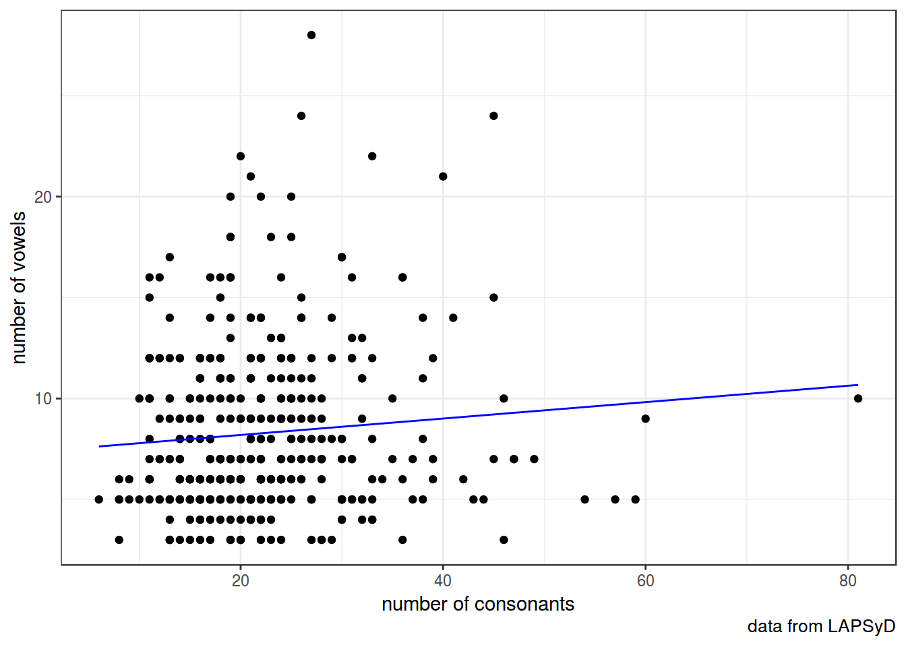
fit2 <- lmer(count_vowel ~ count_consonant + (1|area), data = lapsyd)
summary(fit2)## Linear mixed model fit by REML ['lmerMod']
## Formula: count_vowel ~ count_consonant + (1 | area)
## Data: lapsyd
##
## REML criterion at convergence: 2242
##
## Scaled residuals:
## Min 1Q Median 3Q Max
## -1.5298 -0.6147 -0.2599 0.5146 4.7043
##
## Random effects:
## Groups Name Variance Std.Dev.
## area (Intercept) 3.983 1.996
## Residual 14.753 3.841
## Number of obs: 402, groups: area, 6
##
## Fixed effects:
## Estimate Std. Error t value
## (Intercept) 7.8928 0.9852 8.011
## count_consonant -0.0111 0.0240 -0.463
##
## Correlation of Fixed Effects:
## (Intr)
## cont_cnsnnt -0.518lapsyd %>%
ggplot(aes(count_consonant, count_vowel))+
geom_point()+
labs(x = "number of consonants",
y = "number of vowels",
caption = "data from LAPSyD")+
theme_bw()+
geom_line(data = fortify(fit2), aes(x = count_consonant, y = .fitted, color = area))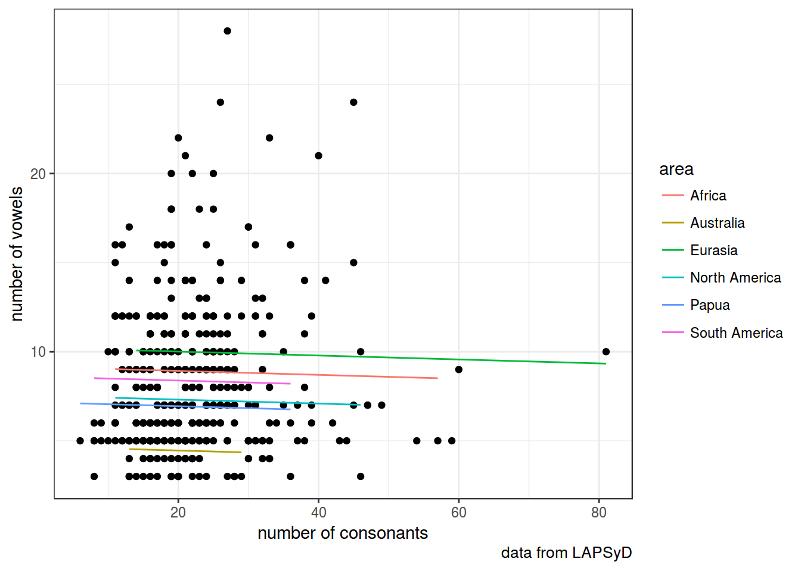
fit3 <- lmer(count_vowel ~ count_consonant + (1+count_consonant|area), data = lapsyd)
summary(fit3)## Linear mixed model fit by REML ['lmerMod']
## Formula: count_vowel ~ count_consonant + (1 + count_consonant | area)
## Data: lapsyd
##
## REML criterion at convergence: 2236.4
##
## Scaled residuals:
## Min 1Q Median 3Q Max
## -1.7991 -0.6217 -0.2334 0.5299 4.7743
##
## Random effects:
## Groups Name Variance Std.Dev. Corr
## area (Intercept) 11.94558 3.4562
## count_consonant 0.01355 0.1164 -0.84
## Residual 14.32212 3.7845
## Number of obs: 402, groups: area, 6
##
## Fixed effects:
## Estimate Std. Error t value
## (Intercept) 7.866281 1.555096 5.058
## count_consonant -0.005108 0.056987 -0.090
##
## Correlation of Fixed Effects:
## (Intr)
## cont_cnsnnt -0.854lapsyd %>%
ggplot(aes(count_consonant, count_vowel))+
geom_point()+
labs(x = "number of consonants",
y = "number of vowels",
caption = "data from LAPSyD")+
theme_bw()+
geom_line(data = fortify(fit3), aes(x = count_consonant, y = .fitted, color = area))
fit4 <- lmer(count_vowel ~ count_consonant + (0+count_consonant|area), data = lapsyd)
summary(fit4)## Linear mixed model fit by REML ['lmerMod']
## Formula: count_vowel ~ count_consonant + (0 + count_consonant | area)
## Data: lapsyd
##
## REML criterion at convergence: 2250.8
##
## Scaled residuals:
## Min 1Q Median 3Q Max
## -1.5967 -0.6774 -0.2688 0.4497 4.6750
##
## Random effects:
## Groups Name Variance Std.Dev.
## area count_consonant 0.008151 0.09028
## Residual 15.093094 3.88498
## Number of obs: 402, groups: area, 6
##
## Fixed effects:
## Estimate Std. Error t value
## (Intercept) 8.68579 0.59439 14.613
## count_consonant -0.05519 0.04649 -1.187
##
## Correlation of Fixed Effects:
## (Intr)
## cont_cnsnnt -0.563lapsyd %>%
ggplot(aes(count_consonant, count_vowel))+
geom_point()+
labs(x = "number of consonants",
y = "number of vowels",
caption = "data from LAPSyD")+
theme_bw()+
geom_line(data = fortify(fit4), aes(x = count_consonant, y = .fitted, color = area))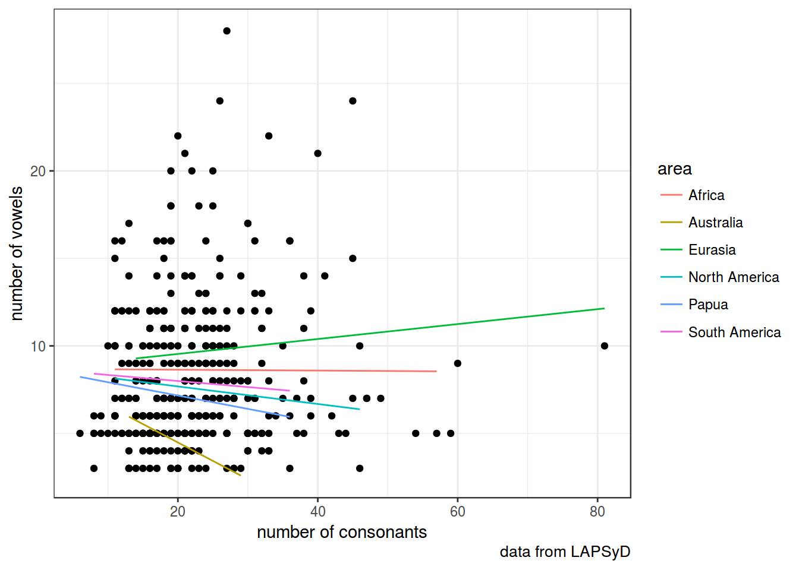
fit5 <- lmer(count_vowel ~ count_consonant + (1|area) + (0+count_consonant|area), data = lapsyd)
summary(fit5)## Linear mixed model fit by REML ['lmerMod']
## Formula:
## count_vowel ~ count_consonant + (1 | area) + (0 + count_consonant |
## area)
## Data: lapsyd
##
## REML criterion at convergence: 2239.8
##
## Scaled residuals:
## Min 1Q Median 3Q Max
## -1.6499 -0.6023 -0.2494 0.5018 4.7428
##
## Random effects:
## Groups Name Variance Std.Dev.
## area (Intercept) 5.67146 2.38148
## area.1 count_consonant 0.00606 0.07785
## Residual 14.42645 3.79822
## Number of obs: 402, groups: area, 6
##
## Fixed effects:
## Estimate Std. Error t value
## (Intercept) 8.19243 1.15107 7.117
## count_consonant -0.02700 0.04326 -0.624
##
## Correlation of Fixed Effects:
## (Intr)
## cont_cnsnnt -0.337lapsyd %>%
ggplot(aes(count_consonant, count_vowel))+
geom_point()+
labs(x = "number of consonants",
y = "number of vowels",
caption = "data from LAPSyD")+
theme_bw()+
geom_line(data = fortify(fit5), aes(x = count_consonant, y = .fitted, color = area))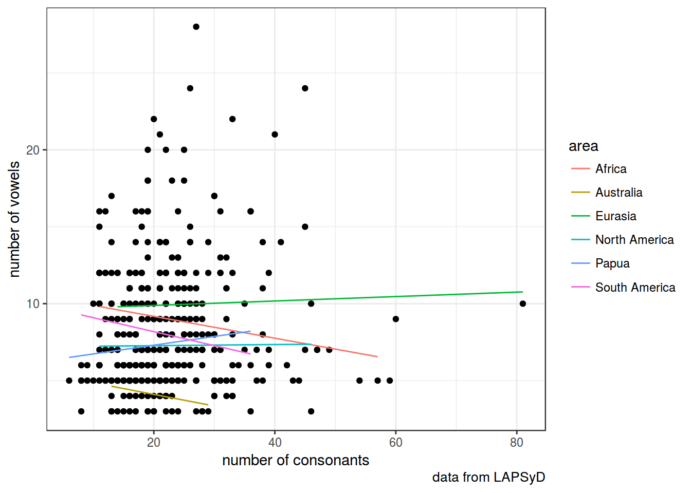
anova(fit5, fit4, fit3, fit2, fit1)## refitting model(s) with ML (instead of REML)